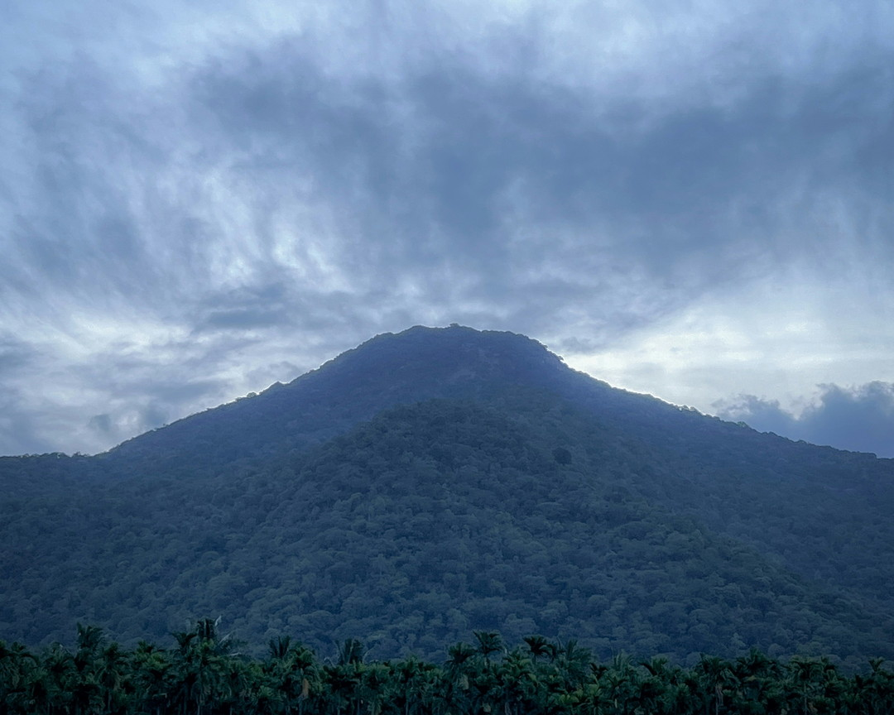

Accelerator Workshop · India 2026
What you do in 10 days
Build and troubleshoot thermophilic compost piles
Brew compost teas, extracts and protozoan infusions
Practise microscopy every day
Sample soil and apply amendments in the field
In collaboration with Isha Outreach
Photograph: Nitish Surelia / Unsplash